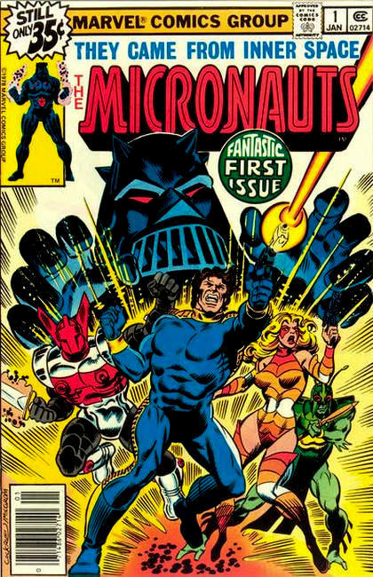

Micronauts was a North American science fiction toyline manufactured and marketed by Mego from 1976 to 1980. The Micronauts toyline was based on and licensed from the Microman toyline created by Japanese-based toy company Takara in 1974.
Mego discontinued the Micronauts line in 1980 prior to the company’s bankruptcy and dissolution in 1982. Years after Mego’s demise other toy companies, such as Palisades Toys and SOTA (State of the Art) Toys, have attempted to revive the toyline over the years.
In November 2009 Hasbro’s VP of Global Designs, Brian Chapman, announced the company’s re-introduction of the Micronaut toyline and hinted that director J.J. Abrams’ Bad Robot Productions was in negotiations to produce a film based on the Micronauts property. Paul Wernick was quoted as saying, "We've written a couple of drafts of Micronauts and it's in the Paramount system now. We developed it with Bad Robot, and it’s probably not what you might imagine a Micronauts movie to be. It departs from the comic wildly, so if you hope it's loyal to the comic you’ll be disappointed in that particular sense. However, it's very, very different and very, very cool."
On December 18, 2017, The Hollywood Reporter announced that Paramount has scheduled the film for an October 16, 2020 release.
Several comic book series based on the Micronaut toyline have been published by Marvel Comics (1979–1986), Image Comics (2002–2003), Devil’s Due Publishing (2004) as well as IDW (2016).

Series: 59 issues 1979-1984
Publisher: Marvel
"Homeworld!", Commander Rann returns from his 1000 year space voyage to find that the Warp Drive has been invented, which has allowed Baron Karza to take over the Microverse while he slept in suspended animation. Rann is captured and sent to the Pleasure Pits where his escape is orchestrated by the others, including those who would become members of the Micronauts. Characters: Micronauts (intro) [Commander Arcturus Rann [Space Glider]; Marionette [Princess Mari]; Biotron; Microtron; Acroyear; Bug]; Baron Karza (Villain); Prince Argon; Acroyear Warriors; Dog Soldiers; Oberon (Prince Argon's Horse); Time Traveler; Prince Shaitan (Acroyear Warrior); Shadow Priest; Endeavor (Rann's spaceship). Written by Bill Mantlo, with art by Michael Golden and Joe Rubinstein. Cover by Dave Cockrum and Al Milgrom.